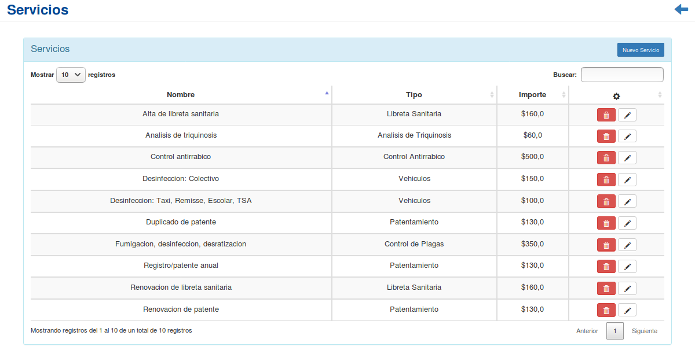
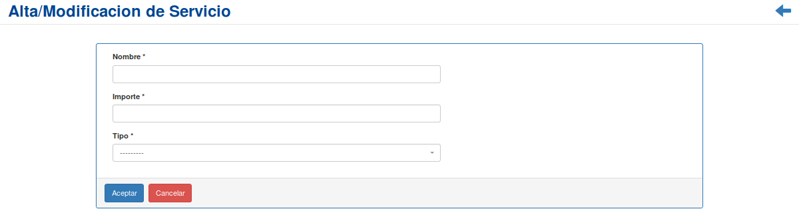
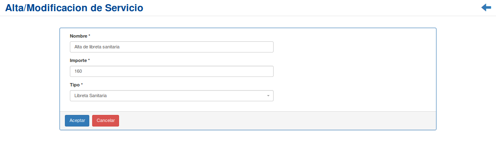
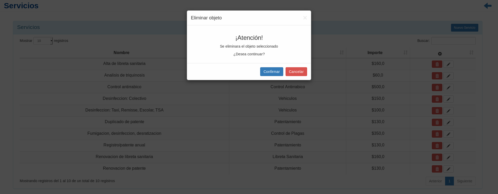

Administración de Servicios¶
Se presentará una pantalla que contendrá un listado con todos los Servicios que se encuentren registrados en el sistema hasta la fecha.
Junto con el listado, se presentarán un conjunto de funcionalidades que permitirán manipular cada Servicio.
Estas funcionalidades son:
Además, si el usuario desea Registrar un nuevo Servicio:
Nuevo Servicio¶
Si el usuario desea crear un nuevo Servicio, deberá presionar el botón
Nuevo Servicio.A continuación el sistema lo redirigirá a la siguiente pantalla:
En esta parte el usuario se le presentará un formulario y deberá ingresar los datos solicitados para dar de alta un nuevo Servicio.
Atención
El sistema siempre validará que la información ingresada sea correcta. En caso de que los datos ingresados sean incorrectos el sistema lo informará. En este punto, las posibles causas de errores son:
- Uno o más campos obligatorios vacíos.
- Uno o más campos con un formato incorrecto.
Una vez completado el formulario, se volverá a la pantalla que contendrá el listado de Servicios.
Modificación de Servicio¶
Si el usuario desea modificar los datos de un Servicio, deberá seleccionar en la columna de acciones asociado al Servicio y presionar el ícono
Modificar.Una vez realizado el paso anterior, el sistema lo redirigirá a la siguiente pantalla:
En esta parte al usuario se le presentará un formulario y deberá actualizar los datos asociados al Servicio.
Atención
El sistema siempre validará que la información ingresada sea correcta. En caso de que los datos ingresados sean incorrectos el sistema lo informará. En este punto, las posibles causas de errores son:
- Uno o más campos obligatorios vacíos.
- Uno o más campos con un formato incorrecto.
Una vez completado el formulario, el usuario deberá presionar el botón
Aceptary el sistema se encargará de actualizar los datos del Servicio seleccionado.
Eliminar Servicio¶
Si el usuario desea eliminar un Servicio, deberá seleccionar en la columna de acciones asociado al Servicio y presionar el ícono
EliminarUna vez realizado el paso anterior aparecerá la siguiente ventana emergente (modal):
En esta parte el usuario deberá decidir si confirma la eliminación del Servicio o no. Si desea confirmar la eliminación deberá presionar el botón
Confirmar, caso contrario, presionará el botónCancelar.